See the country, full of charm.
A trip to Weston Red Barn Farm is like visiting a turn-of-the-century working farm: traditional animals and crops, a country store with fresh produce, U-pick pumpkins, apples and flowers, and two wedding barns.
November hours: open through Nov 9, Tues–Sun, 10 am–4 pm. December to April, call for an appointment.
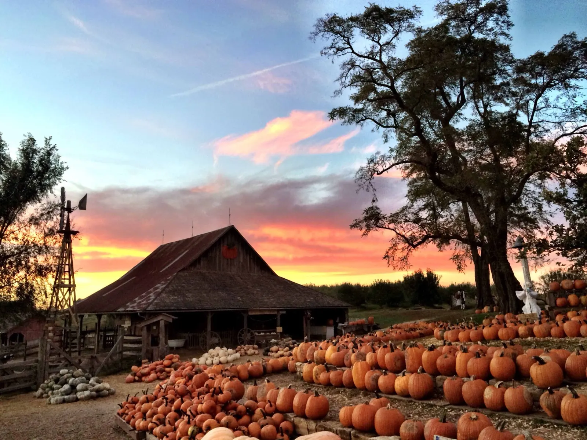
in Missouri
- 1990Opened by Steve and Cindy Frey
- Free entryNo general admission or parking fee
- 25+ yearsOf weddings in two barns
- 30+ yearsOf school tours on the farm
- U-pickPumpkins, apples and flowers
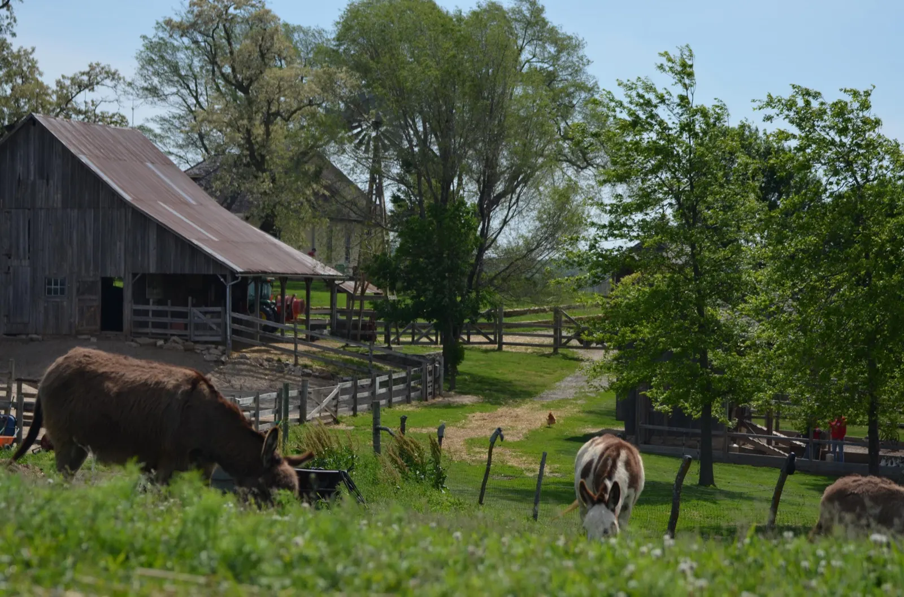
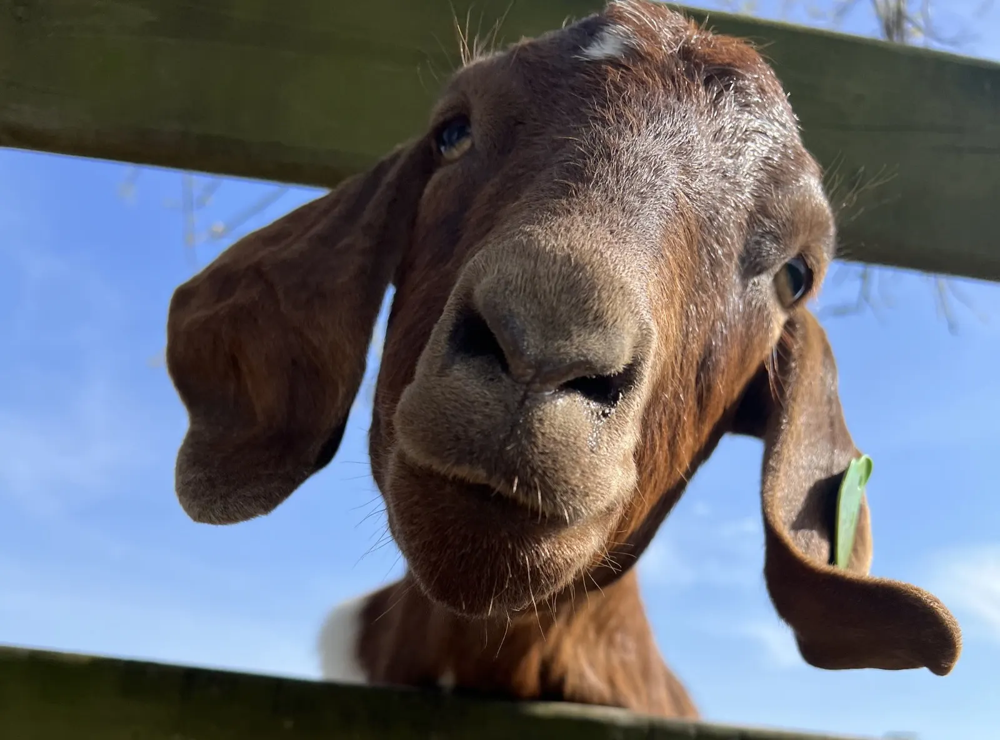
Say hello at the fence
The views speak for themselves.
Steve and Cindy Frey founded the farm in 1990. Steve had vivid childhood memories of visits to his uncle’s farm in Missouri and wanted to recreate the experience of the family farm for everyone to visit.
The mission hasn’t changed: an educational experience for children and a place for families to enjoy an authentic farm setting, safe, peaceful and noncommercial. The next generation is bringing new ideas while holding true to it.
The barnyard
A typical barnyard at the turn of the century: chickens, ducks, geese, turkeys, goats, sheep, pigs, alpacas, ponies, horses, donkeys and cows. Our Belted Galloways birth their calves in the late summer.
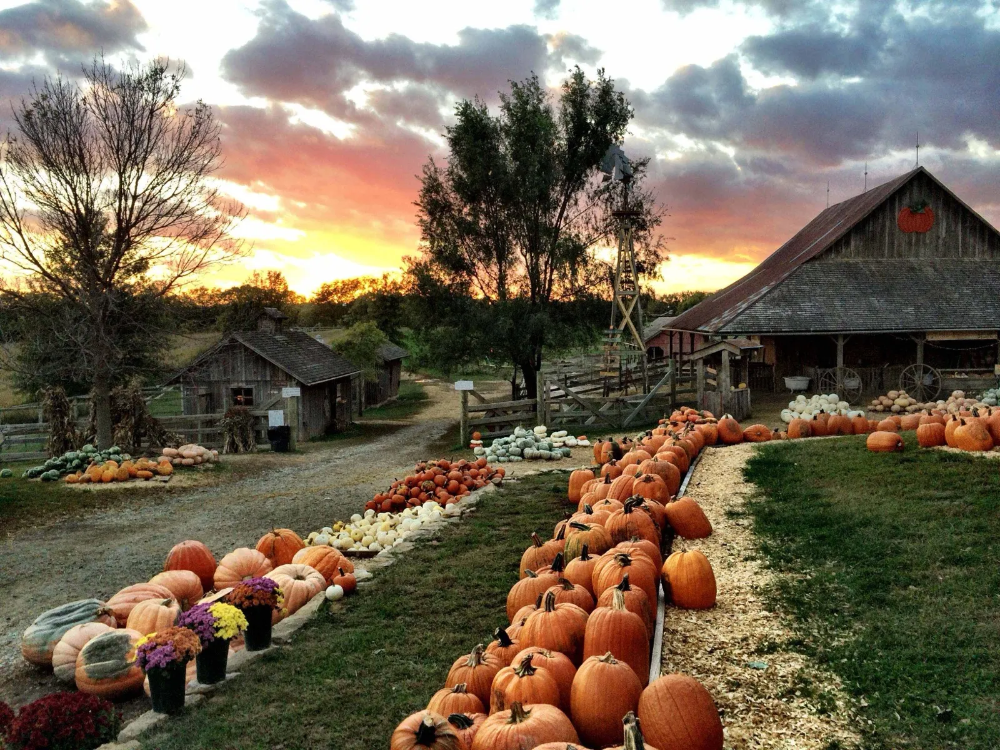
The main pumpkin yardA working farmstead, all year long.
The farm is open to the public from Memorial Day weekend through November. In spring and summer, the barnyard and the country store are the focal points; in the fall, the farm comes alive as we celebrate the harvest.
-
April and May
Spring
A quiet time on the farm, with educational tours and baby farm animals: think baby goats, lambs and the occasional foal.
-
From Memorial Day weekend
Summer
The annual opening to the public. Peaches, sweet corn, tomatoes, melons and cucumbers in the country store.
-
From Labor Day weekend
Fall
U-pick apples, then Fall Festival weekends: hayrides, pumpkins, ponies, caramel apples, BBQ and apple cider. The Pumpkin Barn sits in a 150-year-old mule barn.
-
December to April
Winter
Call for an appointment, with questions or to set up a wedding tour.
Pick your own bouquet.
The u-pick flower garden opens in mid-June and lasts until the first frost of the season. Stop into the store for your vase and cutters, then head out and pick.
- Zinnias
- Sunflowers
- Cosmos
- Celosia
- and more
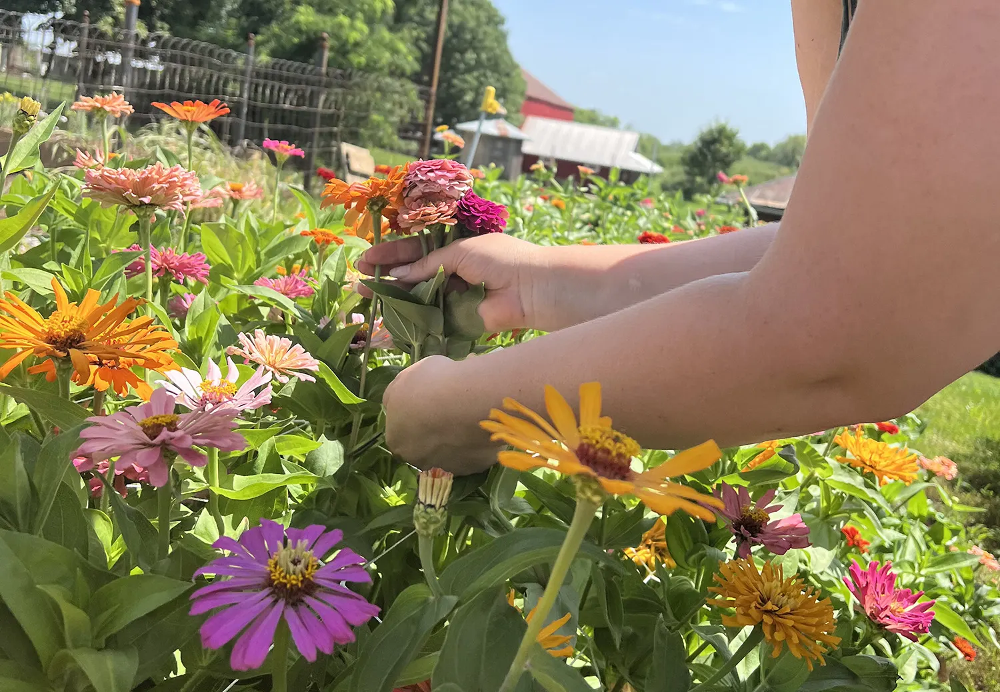
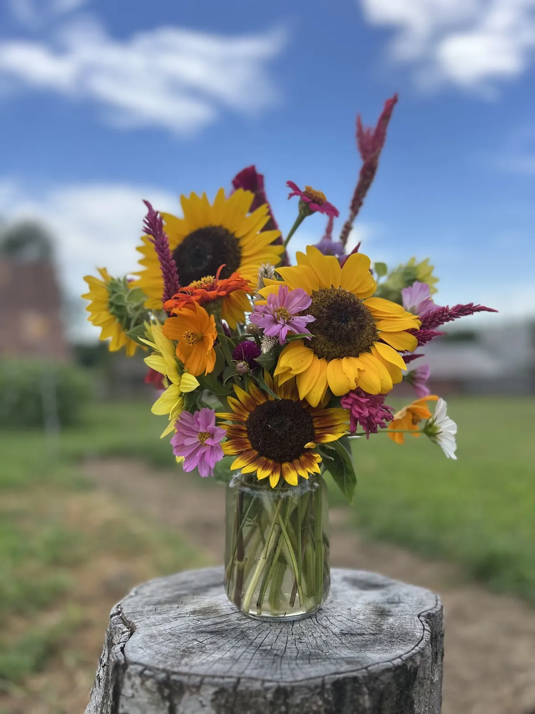
Mid-June to the first frostFarm-fresh beef for sale.
MidAmerican Beef is dedicated to helping families eat more wholesome, farm-fresh food by offering unparalleled beef products.
Find your favorite cuts in the Country Store.
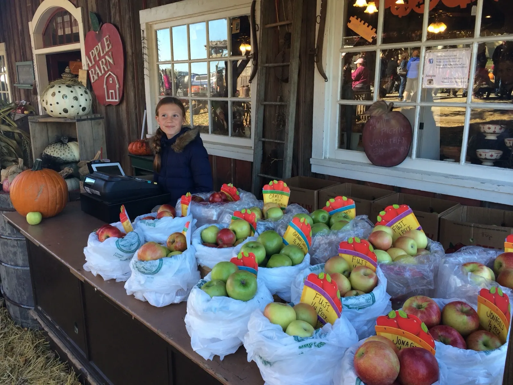
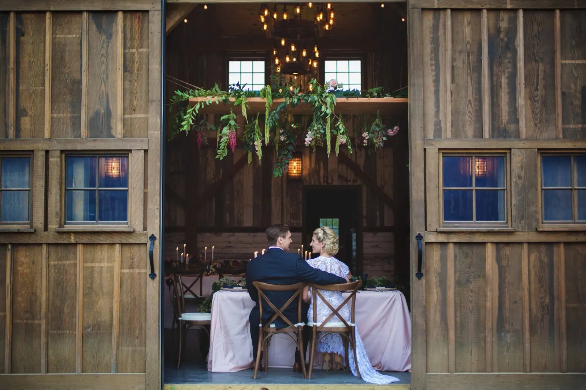
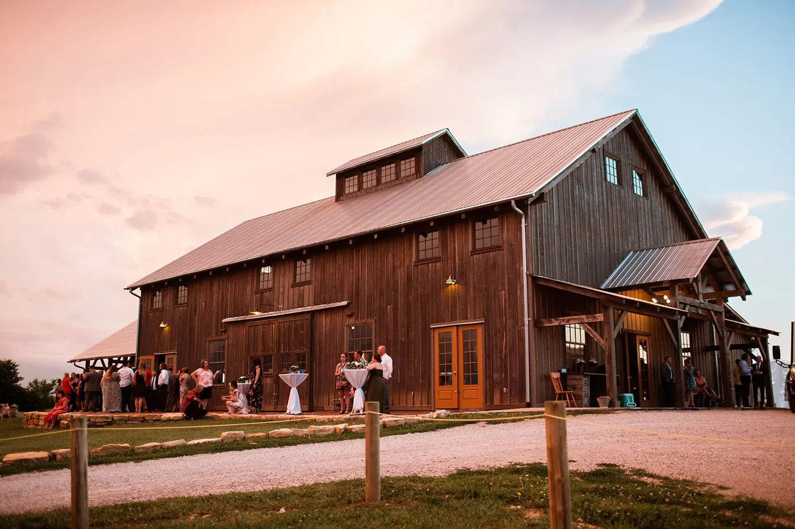
Weddings for over 25 yearsTwo wedding barns on the hill.
Two distinct, budget-friendly venues with commanding views of the Missouri countryside. You choose your vendor team; we’re happy to recommend wedding professionals we trust.
Both barns include tables and chairs, climate-controlled changing rooms, catering space, ample parking and oodles of charm.
“Wedding trends come and go, but nature is always in style.”
Weston Red Barn Farm
Nature is the ultimate classroom.
For over thirty years, we’ve hosted hundreds of thousands of school children. Every child gets an authentic, up-close visit with the animals that live on the farm; spring groups take a private tour with one of our farmers. Activities vary by season and can include a hayride, a visit to the pumpkin patch and more.
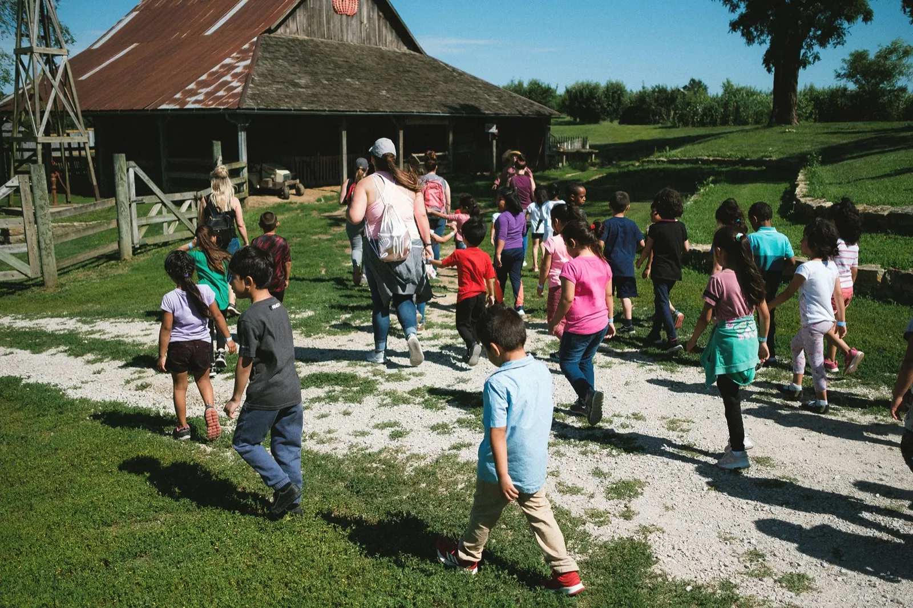
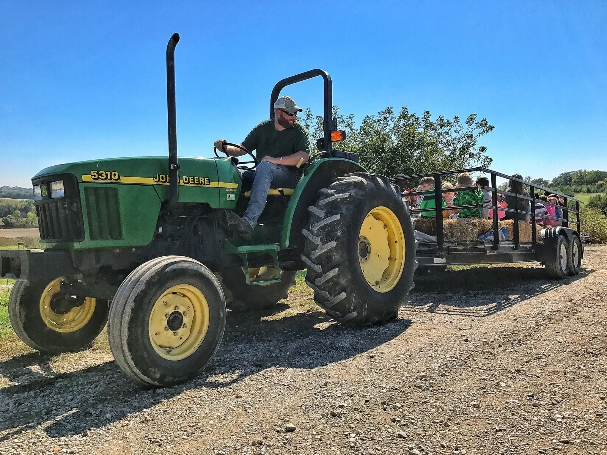
Come see the farm.
There is no general admission or parking fee. On fall weekends, tickets for hayrides, the Grain Train, the maze and pony rides are at the InFARMation booth, at the front of the farm.
- November
- Open through Nov 9
Tues–Sun, 10 am–4 pm - Winter, Dec–Apr
- Call for an appointment
- Spring and summer
- Open from Memorial Day weekend
Tues–Sun, 10 am–4 pm - Fall
- Mon–Sun, 9 am–5 pm
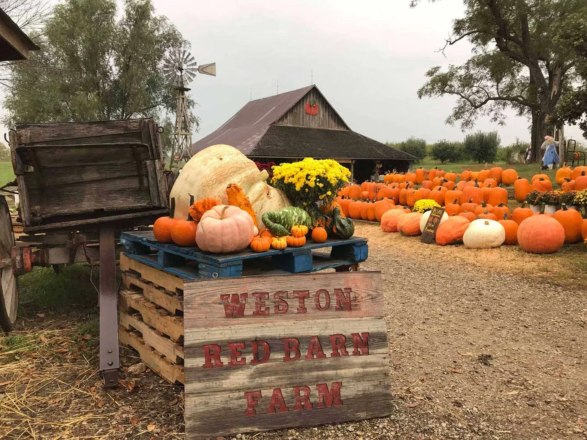
- Address
- 16300 Wilkerson Road
Weston, Missouri 64098 - Phone
- (816) 386-5437